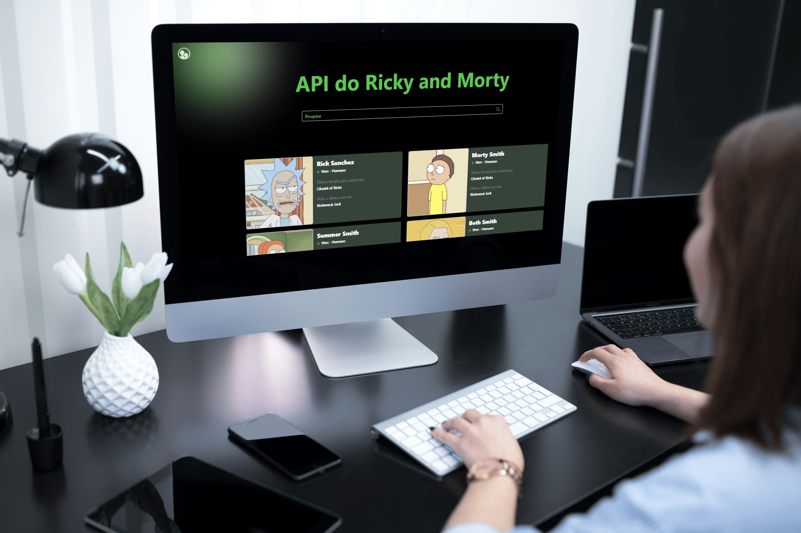
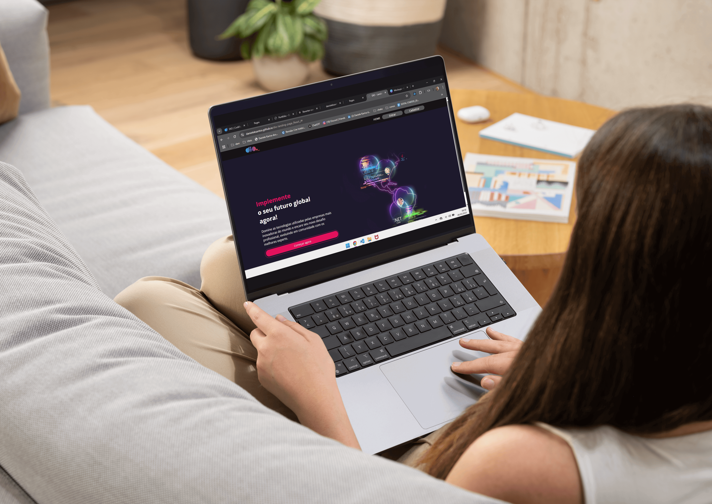

- carregando...

Olá, eu sou a
Carregando...
Transformo código em experiências acessíveis e escaláveis para pessoas!
-
Bootcamp Growdev - API Rick and Morty
Projeto desenvolvido durante o Bootcamp da Growdev, com o objetivo de criar três protótipos de layouts que exibem informações sobre personagens da API Rick and Morty. Nesse projeto foi utilizada a integração com a API Rick and Morty para consumo e exibição dinâmica dos dados.
Versão online do projeto (Vercel) Repositório no GitHub
Técnologias utilizadas: HTML, CSS e JavaScript, Bootstrap e integração com a API. -
Repo-Wikis - Buscando repositórios no GitHub - React
Repo-Wikis é uma aplicação desenvolvida com React que permite buscar e listar informações sobre repositórios do GitHub através do consumo da API do GitHub. O objetivo é fornecer uma interface simples e prática para explorar os repositórios de forma interativa.
Versão online do projeto Repositório no GitHub
Técnologias utilizadas: HTML, CSS, JavaScript e React. -
Dio - Landing Page - React JavaScript e React Typescript
A página foi criada para ser uma introdução envolvente aos cursos e conteúdos oferecidos pela Digital Innovation One (DIO), apresentando uma interface simples e funcional com componentes reutilizáveis. Desenvolvida em duas versões: JavaScript com React e TypeScript com React.
Versão online do projeto - React JavaScript Repositório no GitHub - React JavaScript Versão online do projeto - React TypeScript Repositório no GitHub - React TypeScript
Técnologias utilizadas: HTML, CSS e JavaScript, TypeScript e React. -
Nikel - Controle Financeiro
Nikel é uma aplicação web que auxilia os usuários a gerenciarem suas finanças pessoais de maneira eficiente, permitindo o controle de receitas, despesas e investimentos.
Versão online do projeto Repositório no GitHub
Técnologias utilizadas: HTML, CSS e JavaScript. -
Coffee Shop - Landing Page

Landing page responsiva desenvolvida para cafeteria, focada em proporcionar uma experiência visual agradável e intuitiva em diferentes dispositivos. O projeto foi estruturado aplicando princípios de design responsivo, layout flexível e boas práticas modernas de front-end, garantindo acessibilidade e usabilidade.
Versão online do projeto Repositório no GitHub
Técnologias utilizadas: HTML, CSS e Bootstrap, com estilização personalizada para oferecer um design diferenciado e alinhado à identidade da marca. -
GrowTravel - Landing Page
O GrowTravel é uma aplicação web fictícia de uma agência de turismo, criada para aplicar conceitos fundamentais de HTML, CSS e acessibilidade. O projeto foi otimizado para atingir pontuações máximas nas métricas do Lighthouse, garantindo: 100% em Acessibilidade, 100% em Desempenho, 100% em Boas Práticas e 100% em SEO
Versão online do projeto Repositório no GitHub
Tecnologias utilizadas: HTML semântico e CSS responsivo, Lighthouse (Google DevTools), com foco em estilização personalizada para criar um design moderno, acessível e adaptável a diferentes dispositivos. -
HBO Max - Landing Page

Landpage clone da plataforma HBO MAX, com o objetivo de criar uma interface visualmente atraente e responsiva. O projeto utiliza conceitos avançados de CSS, como layout flexível, animações e efeitos de transição, para proporcionar uma experiência de navegação fluida e agradável.
Versão online do projeto Repositório no GitHub
Tecnologias utilizadas: HTML e CSS, com foco em estilização personalizada para criar um design moderno e adaptável a diferentes dispositivos. -
Discord Clone - Landing Page

Este é um projeto de estudo para recriar a página inicial do Discord, com foco em HTML5, CSS3 e design responsivo, tem como objetivo de criar uma interface visualmente atraente e responsiva
Versão online do projeto Repositório no GitHub -
API Pokemón | Pokedex

O projeto Pokedex teve como objetivo de criar uma experiência envolvente ao explorar o mundo do Pokemon. O projeto foca no desenvolvimento de habilidades com JavaScript, consumo de APIs e manipulação do DOM, resultando em uma aplicação dinâmica e intuitiva.
Versão online do projeto Repositório no GitHub
Tecnologias utilizadas: HTML, CSS e JavaScript, Pokémon-API. -
Mundo Invertido - Stranger Things

Landpage interativa inspirada no universo de Stranger Things, com o objetivo de recriar o ambiente imersivo do Mundo Invertido. O projeto utiliza conceitos avançados de CSS, como efeitos de transição, animações e layout responsivo, proporcionando uma experiência visual única e envolvente.
Versão online do projeto Repositório no GitHub
Tecnologias utilizadas: HTML e CSS, com foco em estilização personalizada para capturar a atmosfera do Mundo Invertido e criar um design dinâmico.